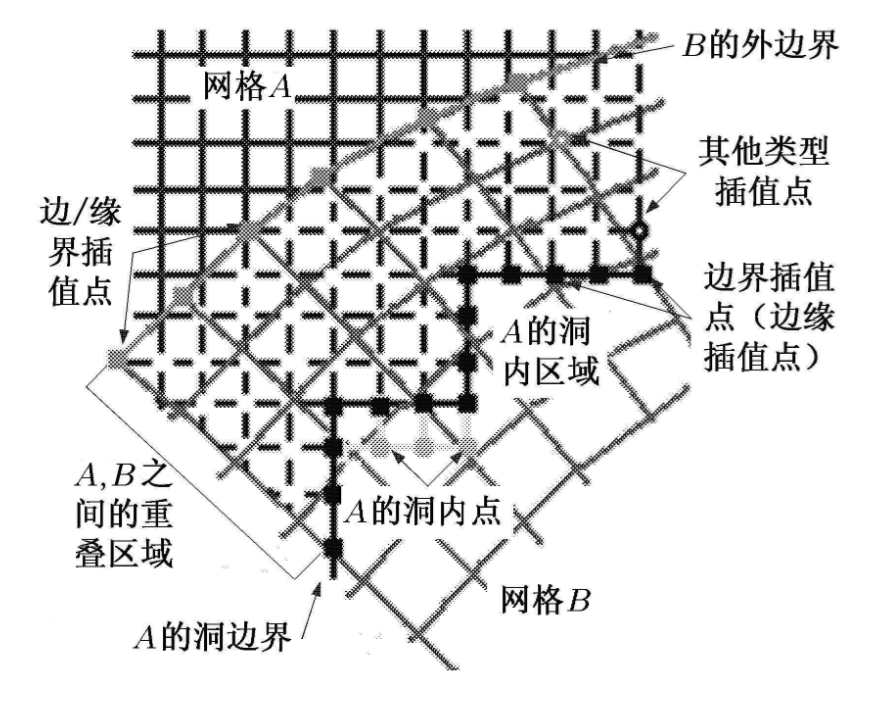
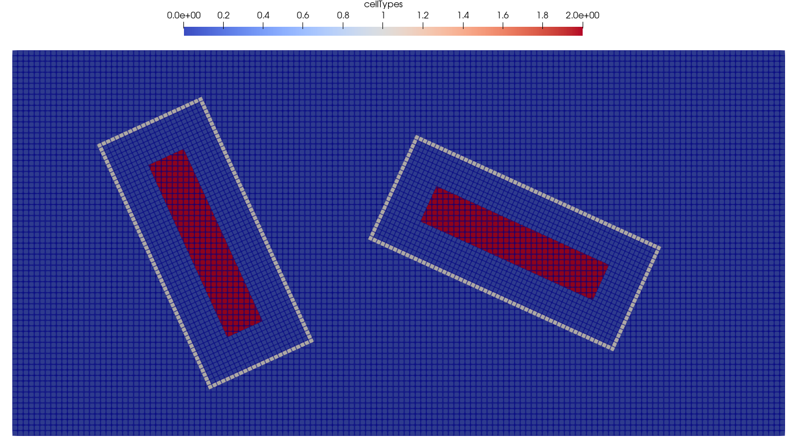
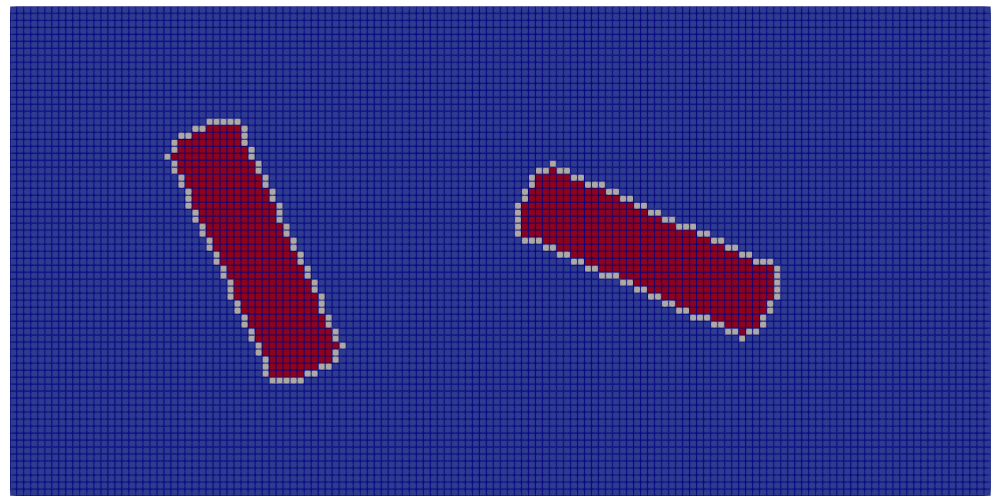
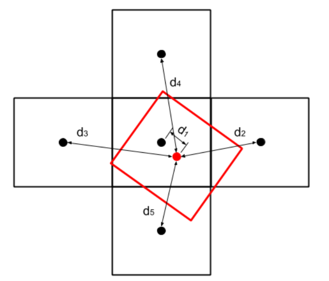

一 重叠网格概述
重叠网格（Overlapping grids），又名Chimera网格或嵌套网格（Overset grids），是一种用以处理复杂的网格运动和解决复杂几何体动网格问题的区域分割与网格组合策略。在该类方法中，网格被分为多个相互重叠嵌套的网格区域，其中贴体网格部分随网格运动，计算在各个网格区域上分别进行，各部分网格之间通过插值进行信息传递。
重叠网格的实质，是通过局部重叠的方式将一套或多套贴体子网格与背景网格进行组装配合，生成一套网格并借助插值过程实现计算。在实际应用中，重叠网格方法包括网格生成、网格挖洞和装配和插值与计算三个主要步骤。本文将以该步骤为顺序，以OpenFOAM ESI版本中的重叠网格方法为例分别详细解释各个步骤的原理和实现。
二 重叠网格流程
2.1 网格生成
重叠网格体系中，生成的网格主要包括以下两类：
-
背景网格：用于定义计算域，设置网格背景和计算域边界条件
-
组件网格：用于贴合内部壁面，设置壁面边界条件
其中，在动网格情况下，组件网格随物体壁面运动而运动，背景网格静止。
网格的生成已有多种成熟的技术。在OpenFOAM中，贴体网格的生成可以通过snappyHexMesh功能实现。分别生成两套网格后，网格通过mergeMeshes命令进行结合，而后可借助topoSet定义重叠区域。
相关前处理流程：
|
|
这里值得注意的是，在使用多套重叠网格时，若某点有多层重叠，topoSet中regionToCell会优先选中region0，即mergeMeshes的第一个参数。该指定目前尚无自定义选项可以改变，而这一特性会影响topoSet对region的选定。需要仔细确认topoSet定义region的逻辑，从而确定mergeMeshes的参数顺序。
2.2 网格挖洞和装配
2.2.1 初始网格中网格点分类
经过网格生成和组合的初始网格，其中的网格点被分为以下几类：
- 洞内点：从计算网格中被剔除，不参与计算的点
- 插值点：位于重叠区域内，计算时需要从其他点插值获取流场信息的点
- 计算点：直接参与计算的点
其中，洞内点的产生是由于网格重叠后，部分网格位于计算边界外或被重复计算无需保留。剔除这一部分网格的过程被称为挖洞过程。在重叠网格的计算中，网格之间通过插值的方式相互传递信息，参与插值的点称为插值点；其余直接参与计算的点称为计算点。

2.2.2 网格的挖洞和装配
网格的装配过程，实质上是建立网格之间插值通信关系的过程。该部分的细节会在后续章节中详细介绍。
以OpenFOAM ESI v2212中教程算例twoSimpleRotors为例，说明重叠网格计算中挖洞和网格装配过程。OpenFOAM以cellType变量标识上述网格类型，其中0对应计算网格，1对应插值网格，2对应洞内网格。


上图中分别展示了组件网格和背景网格的挖洞和插值网格分布情况。可见在背景网格中，以组件网格壁面向外拓展的一部分网格被挖洞，洞边界上的网格中变量信息由插值得到；对于组件网格，其与背景网格的重叠边界上的信息由背景网格向其插值得到。
2.3 插值与计算
组件网格和背景网格之间的插值实现方法较多。OpenFOAM中，主要使用的格式包括基于网格距离的inverse distance方法和基于网格之间重叠体积关系的Cell Volume Weight方法。
2.3.1 Inverse Distance
该方法基本思路是以贡献网格（Donor）和被插值网格（acceptor）之间的距离为基础加权插值。

对于图中情况，各个贡献网格的权重表示为：
$$ \omega_i=\frac{1/|d_i|}{S} $$其中$S$为距离绝对值倒数之和：
$$ S=\Sigma\frac{1}{|d_i|} $$被插值网格上插值变量$\phi$由是表示为：
$$ \phi_{a}=\Sigma \omega_i \phi_i $$该方法具有二阶精度，但无法保证守恒。
OpenFOAM中使用Inverse Distance计算权重的函数如下：
|
|
2.3.2 Cell Volume Weight
该方法基于源网格单元与目标单元相交部分的体积比例确定插值权重。加权过程与Inverse Distance类似，权重函数表示为：
$$ \omega_i=\frac{V^o_i}{V_a} $$其中，$V_i^o$为贡献网格与被插值网格重叠的体积，$V_a$为被插值网格总体积。
相较于Inverse Distance，该类方法能够保证质量守恒（$\Sigma \omega_i=1$），但是计算消耗和复杂度都较高，并且仅具有一阶精度。
三 OpenFOAM 重叠网格计算流程
以下伪代码说明OpenFOAM中计算重叠网格的流程，引用修改自Wang, Dongxu, and Sheng Dong, OE2023
|
|